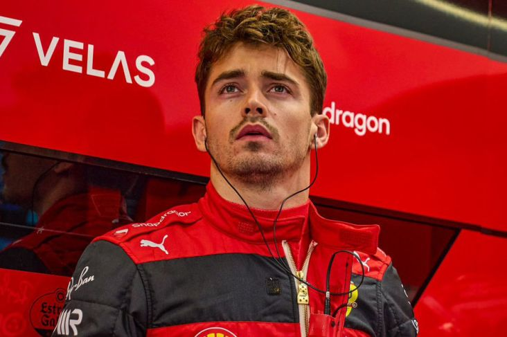
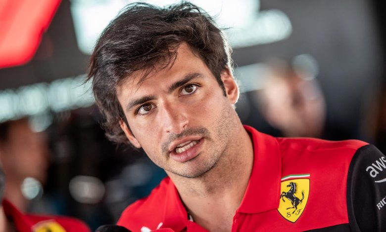

Driver
Charles Leclerc dan Carlos Sainz merupakan pasangan pembalap tim Scuderia Ferrari musim ini. Keduanya merupakan pembalap yang hebat, cerdas, dan brilian. Berikut ini adalah profil mereka berdua:
Charles Leclerc
Charles Leclerc lahir pada tanggal 16 Oktober 1997 di Monako, dia memiliki dua orang saudara kandung yang bernama Arthur Leclerc dan Lorenso Leclerc, Charles Leclerc menggemari dunia balap dari masa kecilnya, dia memulai karirnya di dunia balap pada usia 8 tahun yaitu pada ajang gokart,selama berkarir di ajang gokart, dia meraih beberapa gelar juara, yaitu Juara PACA Prancis pada tahun 2005, 2006, dan 2008. Kemudian, dia meraih gelar juara kadet Prancis pada tahun 2009, piala Kart Junior Monako pada tahun 2010, dan beberapa gelar juara lainnya pada ajang gokart.
Karir Charles Leclerc di motosports dimulai pada tahun 2014 dengan mengikuti kejuaraan Formula Renault 2.0 Alps, pada kejuaraan tersebut dia berhasil meraih tujuh podium dan dua kemenangan, dia menempati posisi dua pada klasemen akhir balapan, dia juga memperoleh status "best rookie" pada kejuaraan tersebut. Pada tahun 2015, Charles Leclerc mengikuti kejuaraan FIA Formula 3 dengan tim Van Amersfoot Racing, dia menempati posisi 4 di klasemen akhir dan mendapat predkat "best rookie". Kemudian, pada tahun 2016, Charles Leclerc mengikuti kejuaraan "GP3 Series" dengan tim ART. Pada kejuaraan tersebut, dia berhasil meraih tiga kemenangan.
Charles Leclerc memulai debutnya di F1 pada tahun 2018 dengan tim Alfa Romeo Sauber F1 team, pada musim tersebut dia mengakhiri musim dengan urutan 13 pada klasemen pembalap. Kemudian, pada akhir tahun 2018, Leclerc direkrut oleh Ferrari dan dikontrak selama empat musim. Pada tahun 2019 sampai sekarang leclerc menjalani kompetisi F1 bersama tim Scuderia Ferrari, dari tahun 2018-sekarang, Charles Leclerc telah meraih 5 kemenangan, 16 pole-position, 18 podium, 7 lap tercepat dan berbagai prestasi lainnya.
Carlos Sainz
Carlos Sainz lahir pada tanggal 1 September 1994 di kota Madrid, Spanyol. Carlos Sainz memulai karir di dunia balapan dengan mengikuti kompetisi gokart. Pada tahun 2008, dia berhasil memenangkan piala kejuaraan KF3 Asia Pasifik dan menduduki posisi kedua pada kejuaraan Spanyol. Pada tahun berikutnya, dia berhasil memenangi kejuaraan Piala Kart Junior Monako. Pada tahun 2010, dia mengikuti program pembinaan pembalap muda Red Bull. Kemudian, dia melanjutkan karirnya di Formula BMW, dia juga mendapat lebih banyak pengalaman dengan mengikuti kompetisi balapan Eurocup Formula Renault 2.0 dan F3 Eropa.
Pada tahun 2012, Carlos Sainz mengikuti Formula 3 dengan tim Carlin, tetapi dia keluar dari perebutan gelar juara. Kemudian, pada tahun 2013 dia mengikuti kejuaraan GP3 dengan tim MW Arden, Carlos Sainz mengakhiri musim dengan finish di posisi 10, dan mengambil bagian dalam kejuaraan seri formula Renault 3.5, serta berhasil menjuarai kompetisi tersebut pada tahun 2014. Carlos Sainz mulai berkarir di F1 saat mendapat bagian dalam program pembalap Red Bull pada tahun 2015 bersama dengan Max Verstappen yang merupakan pembalap utama tim Oracle Red Bull Racing di F1. Pada tahun 2015-akhir 2017, Carlos Sainz menjalani debut di F1 dengan tim Toro Rosso.
Kemudian, pada akhir tahun 2017. Carlos Sainz pindah ke Renault, karirnya bersama Renault cukup memuaskan di mana dia berhasil menempati satu peringkat di bawah rekan setimnya Niko Hulkenberg. Kemudian, pada tahun 2019-2020, Carlos Sainz menjalani karir di F1 bersama tim McLaren, dan berhasil membantu McLaren menempati posisi 4 di klasemen konstruktor pada tahun 2019, dan posisi ke 3 pada tahun 2020. Pada tahun 2021 sampai sekarang, Carlos Sainz menjalanai debut di Scuderia Ferrari. Prestasi yang diraih oleh Carlos Sainz adalah 1 kemenangan, 3 lap tercepat, 12 podium, start depan sebanyak 5 kali, dll.